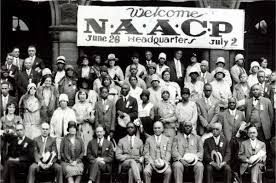
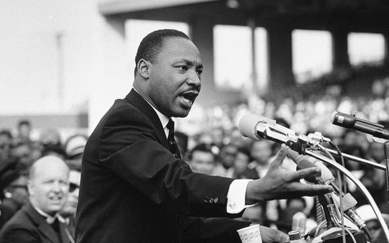
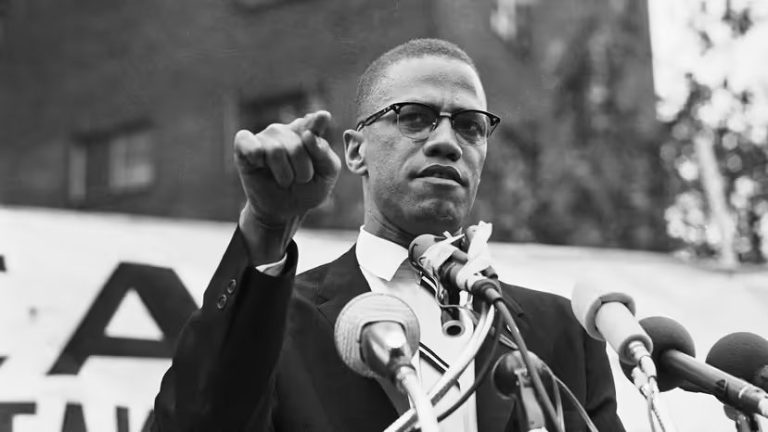
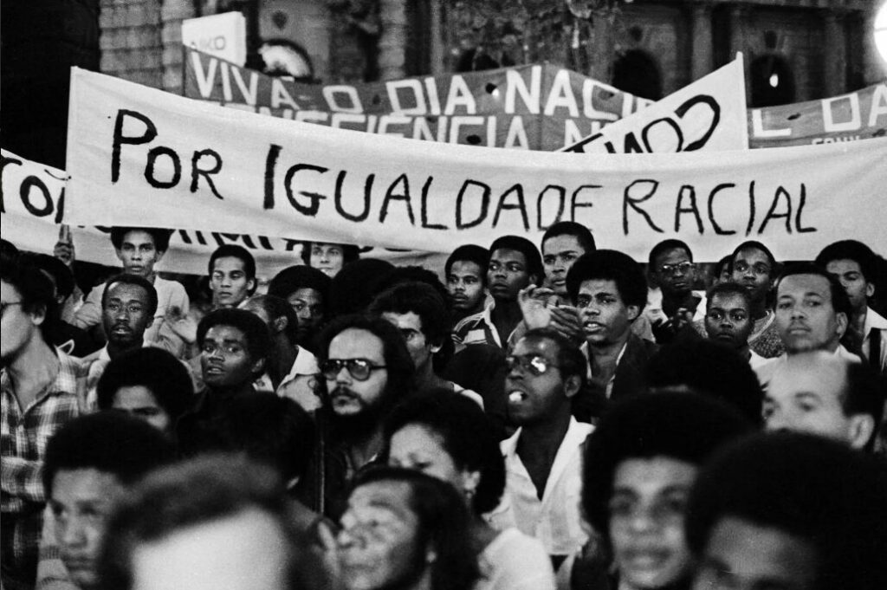
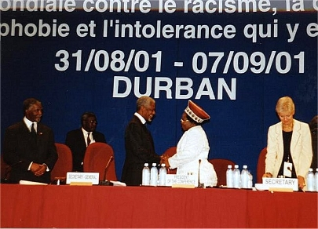
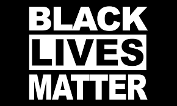
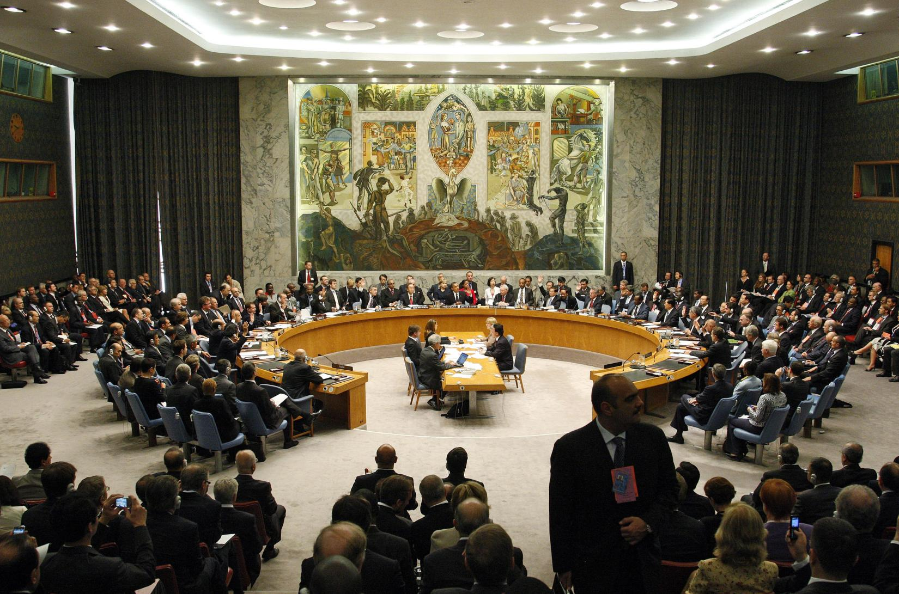

Movimentos Negros que Marcaram época

1900 - 1930
- 1909: Fundação da NAACP (Associação Nacional para o Progresso de Pessoas de Cor), uma das principais organizações de direitos civis nos EUA.
- 1919: “Verão Vermelho”: onda de violência racial em cidades americanas.
- 1920: Movimento Pan-Africanista ganha força com líderes como Marcus Garvey, defendendo a união global da diáspora africana.

1950 - 1960
- 1950s–1960s: Descolonização de países africanos.
- 1954: início do Movimento pelos Direitos Civis (EUA).
- 1955: Boicote aos ônibus de Montgomery – Rosa Parks e Martin Luther King Jr.
- 1960s: Movimento Black Power (EUA) — Malcolm X, Panteras Negras.

1960 - 1970
- 1963: Marcha sobre Washington – discurso "I Have a Dream" de Martin Luther King Jr.
- 1964: Ato dos Direitos Civis (EUA) proíbe discriminação.
- 1965: Lei dos Direitos de Voto (EUA) garante voto a todos.
- 1968: Assassinato de Martin Luther King Jr.

1970 - 1980
- 1978: Fundação do Movimento Negro Unificado (MNU) no Brasil.
- 1979: Luta contra o Apartheid ganha Força após a morte de Steve Biko.
- 1980: Fim do Movimento dos Panteras Negras (EUA).

1990 - 2000
- 1990: Libertação de Nelson Mandela.
- 1994: Nelson Mandela torna-se presidente da África do Sul.
- 2001: Conferência de Durban (ONU): Racismo reconhecido como violação de direitos humanos.

2000 - 2020
- 2013: Surge o movimento Black Lives Matter após a morte de Trayvon Martin (EUA).
- 2015–2020: Protestos antirracistas em escala global (Brasil, França, etc).
- 2018: Marielle Franco, ativista negra brasileira, é assassinada no Rio de Janeiro.

2020 - 2025
- 2020: Protestos globais após a morte de George Floyd nos EUA.
- 2022: ONU declara o Racismo como uma pandemia global.
- 2023-2025:Avanço de políticas afirmativas e Cotas em universidades.